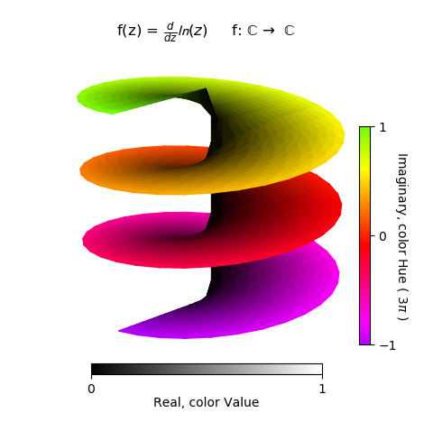
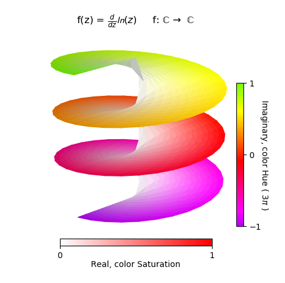

Complex Number Representation, Hue and Value¶
In this simple example, r and θ represent the real and imaginary components of the function, respectively. To differentiate these two components, the value and hue of the surface color is used, along with the surface geometry.
import numpy as np
from matplotlib import pyplot as plt
import s3dlib.surface as s3d
import s3dlib.cmap_utilities as cmu
#.. Complex Number Representation, Hue and Value
# 1. Define function to examine .....................................
Hlow, Hhi = 0.783, 1.258 # Hue limits
def screwfunc(rtz, k) :
r,t,z = rtz
T = k*t
Z = T - k*np.pi
return r,T,Z
def hsv_color(rtz, k) :
r,t,z = rtz
N = 0.5 + z/(2.0*k*np.pi) # 0 < N < 1
Hrange = Hlow + (Hhi-Hlow)*N
h = np.mod( Hrange, 1.0)
s = np.ones(len(r))
v = r
return h,s,v
# 2. Setup and map surfaces .........................................
rez = 4
purple2green = cmu.hsv_cmap_gradient([Hlow,1,1],[Hhi,1,1])
valmap = cmu.hsv_cmap_gradient([0,0,0],[0,0,1])
screw = s3d.PolarSurface(rez, basetype='hex_s', cmap=purple2green)
screw.map_geom_from_op( lambda rtz : screwfunc(rtz, 3) )
screw.map_color_from_op( lambda rtz : hsv_color(rtz, 3),rgb=False )
# 3. Construct figures, add surface, plot ...........................
fcc = r' f: $\mathrm{\mathbb{C}}$ $\to$ $\mathrm{\mathbb{C}}$' +'\n\n'
fig = plt.figure(figsize=plt.figaspect(1))
ax = plt.axes(projection='3d')
axlim = 0.8
minmax, zminmax = (-axlim,axlim) , (-8*axlim,8*axlim)
ax.set(xlim=minmax, ylim=minmax, zlim=zminmax )
ax.set_title( r'f(z) = $\frac{d}{dz} \mathcal{ln}(z)$' + fcc )
cbar = plt.colorbar(screw.cBar_ScalarMappable, ax=ax, ticks=[-1,0,1], shrink=0.6, pad=-.1 )
cbar.set_label(r'Imaginary, color Hue ( 3$\pi$ )', rotation=270, labelpad = 10)
sm = plt.cm.ScalarMappable(cmap=valmap)
sm.set_array([])
cbar2 = fig.colorbar(sm, ax=ax, ticks=[0,1], shrink=0.6, pad=.05, orientation='horizontal' )
cbar2.set_label('Real, color Value', labelpad = 1)
ax.set_axis_off()
ax.view_init(25, 45)
ax.add_collection3d(screw)
fig.tight_layout()
plt.show()
To construct the colorbars, two colormaps were created using the hsv_cmap_gradient method. The purple2green colormap was assigned as the default colormap for the surface object during instantiation. However, this map was only used for the creation of the Imaginary colorbar using the surface object property cBar_ScalarMappable.
To use the color saturation as the visual indicator of the Real component, the two highlighted lines in the hsv_color method is simply changed as:
v = np.ones(len(r))
s = r
to produce the following figure. The valmap color map was modified to reflect the description in the Real colorbar along with the labeled text. In addition, shading of 0.7 was applied to enhance the 3D visualization.
The map_color_from_op method was also used in the Functional RGB Color Mapping example.